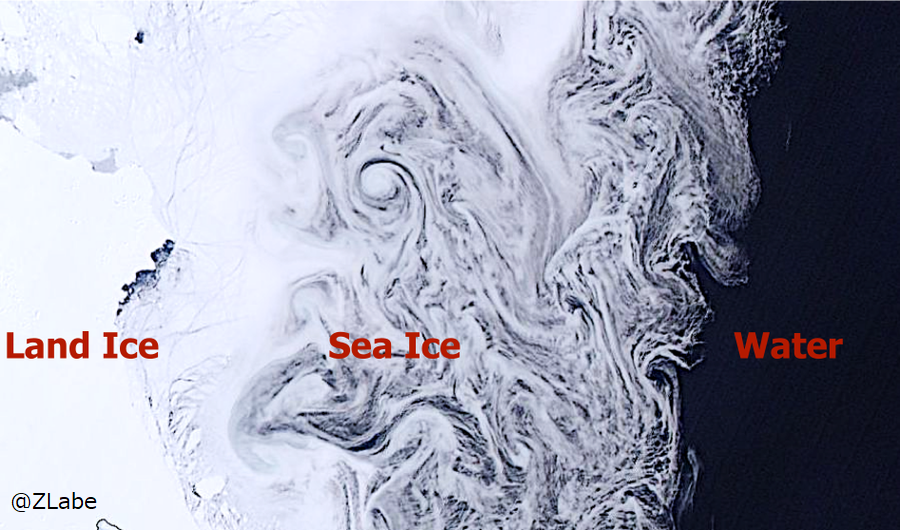
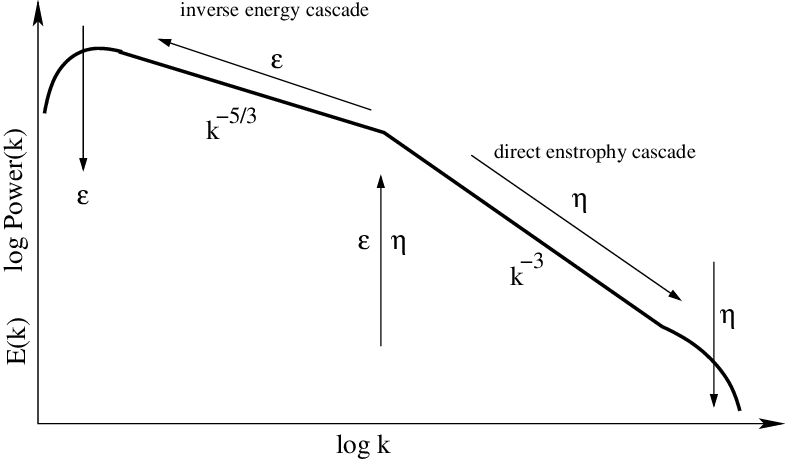
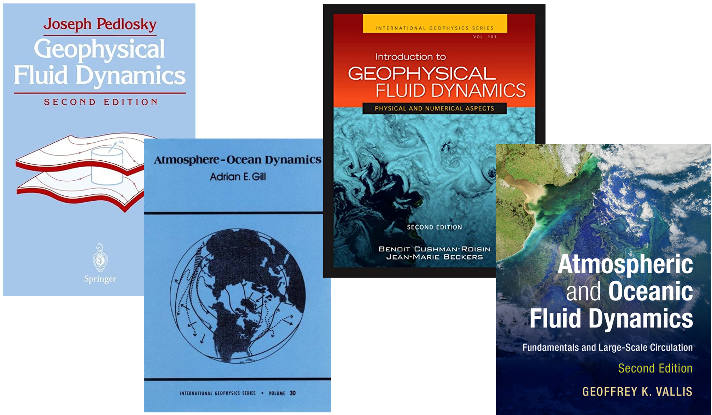

海洋乱流 ー 複雑な地球流体の振る舞いを理解する
海洋混合は、海洋内部の異なる水塊が混ざり合うプロセスを指します。海洋は川の流れのように滑らかなものではなく、実は渦を含む乱流で満たされているので、海洋の混合は、海洋による熱と物質の分配、気候システム、そして生態系にとって非常に重要な役割を果たします。特に、地球の自転に伴うコリオリ力の影響が顕著な中規模渦（数十から数百ｋｍの水平スケール）と、風と潮汐が作る内部重力波がもたらす混合は、南極海の力学にとって本質的に重要です。これらの渦は、海洋の水温・塩分・圧力分布によって定まる密度構造に従って、中立的な運動をしようとします。
海洋混合は、その重要性にもかかわらず、モデル化や予測が困難な、カオス的で複雑なプロセスです。特に極域海洋においては、水から氷への相変化があること、海氷や棚氷との間の境界過程が加わるので、その再現の複雑さは一層増します。一方で海洋乱流は、ときには思いがけず組織だった様相を呈することがあり、それは海洋力学の魅力の1つでもあります。
Graham and Ringler (2012)
その一例が「逆カスケード inverse cascade」と呼ばれる現象です。逆カスケードとは、小さな渦が集まって徐々に大きな渦に成長する現象を指します。通常、流体ではエネルギーは大きな渦から小さな渦へと伝達され、やがて分子レベルで熱散逸するという順カスケードが生じますが、逆カスケードは、海洋中のエネルギーが小さな渦から始まり、それらが次第に集まって大きな渦を作るプロセスです。こうして形成される大規模な渦やジェットは、海洋による熱・炭素の分配機構や、気候システムに重大な影響を与えます。こうした現象が起こる理由としては、地球の自転の影響で、渦が形成される際に角運動量が保存されやすいことが挙げられます。
地球流体力学で広く使われてきた教科書
「回転」と「成層」の影響下での流体の振る舞いを考える「地球流体力学 geophysical fluid dynamics」は、地球や他の惑星における大気と海洋の力学を記述するために発展しました。私たちは、地球流体力学の方程式系（保存則、運動方程式、状態方程式）に基づいて、数値シミュレーションを構築し、現場海洋観測や衛星観測を初期条件・境界条件として与えることで、海洋混合と、そしてその結果として生じる気候変動と氷の融解をよりよく理解するために取り組んでいます。下の動画は、南極沿岸域での超高解像度数値シミュレーションの出力結果です。
関連研究
- Yamazaki, K., Aoki, S., & Mizobata, K. (2023). Diffusion of Circumpolar Deep Water towards Antarctica. Journal of Geophysical Research: Oceans, 128(2), e2022JC019422.
- Katsumata, K., & Yamazaki, K. (2023). Diapycnal and isopycnal mixing along the continental rise in the Australian–Antarctic Basin. Progress in Oceanography, 211, 102979.